يستبدل نظام GovBudget الموازنة القائمة على المدخلات بالموازنة المبنية على الأداء.
الموازنة التقليدية تسأل: على ماذا سننفق المال؟ — رواتب، مستلزمات، معدات. أما الموازنة المبنية على الأداء فتسأل: ماذا سنقدّم، وكم تكلفة تقديمه؟ المبلغ ذاته، لكن السؤال مختلف، وكذلك الإجابة التي يمكنك تقديمها.
يجيب النظام عن السؤال الثاني بربط كل تكلفة بـالنشاط الذي تموّله. وتلتقي ثلاثة مسارات للتكلفة عند الأنشطة:
وبمجرد أن يستقر كل درهم على نشاط، يستطيع النظام تجميع التكاليف في برامج، وإعادة توزيع التكاليف غير المباشرة على الأعمال التي تساندها، وإصدار تقارير بتكلفة المخرج. هذا التسلسل — من الموظف إلى النشاط إلى البرنامج إلى المخرج — هو ما يشرحه هذا الدليل.
خمسة مصطلحات تحمل معظم المعنى في النظام، وفهمها يجعل بقية الدليل أوضح بكثير.
الجهة هي مؤسسة أو هيئة حكومية — مثل دائرة الجمارك أو دائرة الآثار والمتاحف. ومركز التكلفة (ويسمى أيضاً الإدارة) هو وحدة داخل الجهة. حسابك مرتبط عادةً بجهة واحدة، وكل ما تراه محصور بها.
البرنامج كتلة من العمل تقدّمها الجهة. ويُصنَّف كل برنامج إلى أحد نوعين، والتصنيف بالغ الأهمية:
| النوع | المعنى |
|---|---|
| تكليف (Mandate) | أعمال المهمة الأساسية — سبب وجود الجهة: التنقيب عن موقع أثري، تخليص البضائع على منفذ، تشغيل متحف. برامج التكليف تستقبل التكاليف غير المباشرة الموزّعة. |
| مساندة (Support) | الأعمال المساندة التي تُمكِّن العمل الأساسي — المالية، الموارد البشرية، تقنية المعلومات، الإدارة العامة. يمكن توزيع تكلفتها على أنشطة برامج التكليف التي تساندها. |
النشاط عمل محدّد داخل برنامج، وهو المكان الذي تُدخَل فيه التكاليف فعلياً. إن كان هناك أمر واحد تتذكره من هذا القسم فليكن هذا: بنود الموازنة ترتبط بالأنشطة لا بالبرامج. وأرقام البرنامج هي دائماً مجموع أنشطته.
المشروع عمل محدّد ومقيّد زمنياً في الغالب — ورأسمالي عادةً. ويمكن ربط التكاليف بمشروع إضافةً إلى النشاط، بما يتيح إصدار تقارير على مستوى المشروع دون الإخلال بهيكل الأنشطة.
يظهر هذا التمييز في معظم التقارير، وسوء فهمه هو السبب الأول للالتباس.
| الأساس | ما يعرضه |
|---|---|
| مباشر (Direct) | تبقى كل تكلفة حيث أُدخِلت تماماً. وهو الأساس الافتراضي والمتاح دائماً، ويُظهر برنامج المساندة بتكلفته الخاصة. |
| إجمالي (Total) fully loaded |
تُطبَّق أحدث عملية توزيع معتمدة: تُضاف تكلفة برامج المساندة إلى برامج التكليف التي تساندها (موزّع إليه) وتُخصم من برنامج المساندة (موزّع منه). لذلك يصبح صافي برنامج المساندة صفراً. |
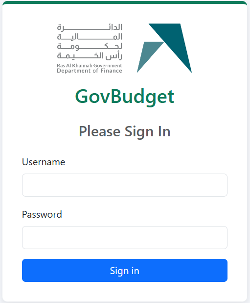
تعمل معظم الشاشات ضمن سياق: سنة مالية، وجهة، ومركز تكلفة. اضبطه مرة واحدة من إعداد الموازنة ويحتفظ به النظام طوال الجلسة.
إذا ظهرت شاشة فارغة أو تعذّر الحفظ، فالسياق هو أول ما ينبغي التحقق منه — فقد تكون على سنة أو مركز تكلفة غير الذي تقصده.
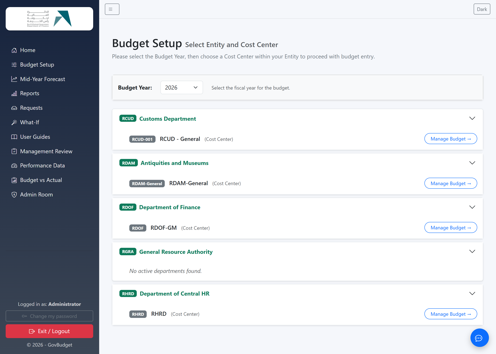
القائمة الجانبية الكحلية على اليمين هي القائمة الرئيسية. ولا تظهر لك سوى العناصر التي يسمح بها دورك، لذا قد تكون قائمتك أقصر من قائمة زميلك. والجدول التالي يعرض القائمة الكاملة.
| عنصر القائمة | الغرض منه |
|---|---|
| الرئيسية | الملخص التنفيذي — الإجماليات، مزيج المصروفات، ومخطط الانتقال من الإيراد إلى الصافي. |
| إعداد الموازنة | اختيار السنة والجهة ومركز التكلفة، ونقطة الدخول لإعداد الموازنة. |
| تقديرات منتصف السنة | فعلي النصف الأول وتقدير النصف الثاني. |
| التقارير | جميع تقارير الموازنة والتكلفة، ومنشئ التقارير، والعرض التنفيذي. |
| الطلبات | الرسائل الداخلية بين مُعِدّي الموازنة والمسؤولين. |
| ماذا-لو | نمذجة السيناريوهات دون المساس بالموازنة الفعلية. |
| أدلة المستخدم | هذه الوثائق. |
| المراجعة الإدارية | مراجعة واعتماد أو إعادة تقديمات الجهات، وحزمة التقارير الإدارية. |
| بيانات الأداء | المؤشرات ومخرجات الأنشطة وتقييمات النضج. |
| الموازنة مقابل الفعلي | مقارنة الموازنة بالمصروف الفعلي المرحّل. |
| غرفة المسؤول | جميع أعمال الإدارة: المستخدمون والبيانات المرجعية والاستيراد ومحرك التوزيع. |
يوجد زران في الشريط العلوي: زر ☰ يطوي القائمة الجانبية لإتاحة مساحة أوسع للتقارير، وزر Dark يبدّل إلى الوضع الداكن.
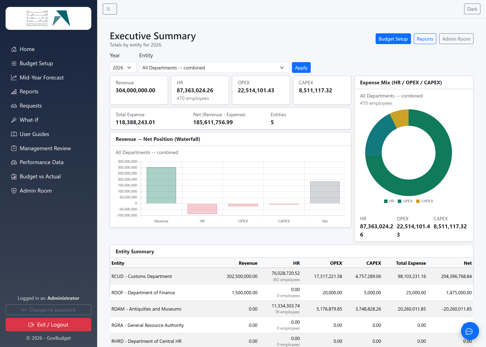
يوجد أربعة أدوار، ويحدّد دورك ما يظهر في قائمتك وما يمكنك فعله في كل شاشة.
| الدور | النطاق |
|---|---|
| SYSADMIN | صلاحية كاملة على كل شيء وعلى جميع الجهات. وهي غير مقيّدة عمداً حتى لا يؤدي خطأ في شاشة الصلاحيات إلى إغلاق النظام أمام الجميع. |
| مسؤول عام | مسؤول غير مرتبط بجهة. يرى ويدير جميع الجهات، وكل شيء عدا شاشة الأدوار والصلاحيات. |
| مسؤول جهة | مسؤول مرتبط بجهة. إدارة كاملة داخل جهته فقط، وممنوع من الأدوات العابرة للجهات — محرك توزيع التكاليف وحزمة المراجعة الإدارية. |
| USER | مُعِدّ الموازنة ضمن جهة ومركز تكلفة محدّدين. يمكنه التقديم للاعتماد لا الاعتماد نفسه، مع صلاحية اطّلاع على التقارير. |
يوجد أيضاً دور VIEWER للاطّلاع فقط: يرى الموازنة والتقارير وشاشات الأداء دون إجراء أي تعديل.
ويعرض الملحق ب مصفوفة الصلاحيات الكاملة.
ينطبق على USER مسؤول جهة مسؤول عام SYSADMIN
ابدأ من هنا. اختر السنة والجهة ومركز التكلفة الذي تُعِدّ موازنته. غالباً ما يكون أمام مستخدم USER خيار واحد، بينما يستطيع المسؤولون التبديل.
وتظهر فئات الموازنة الأربع كتبويبات في أعلى شاشة الإدخال:
| الفئة | المحتوى |
|---|---|
| الإيرادات | الإيرادات المتوقع تحصيلها. |
| الموارد البشرية | تكاليف الموظفين — تُستورد مركزياً ثم تُوزَّع على الأنشطة (انظر 5.3). |
| الرأسمالي | المصروفات الرأسمالية. |
| التشغيلي | المصروفات التشغيلية. |
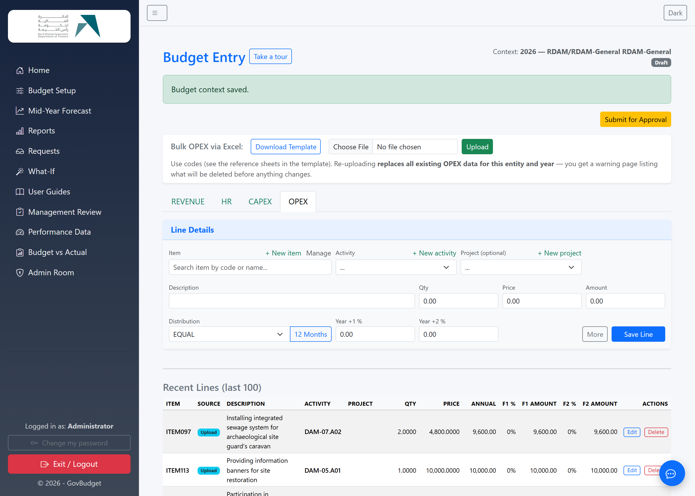
تختلف الموارد البشرية عن باقي الفئات. أنت لا تُدخل مبالغ الرواتب؛ فالتكلفة السنوية لكل موظف تُستورد من قِبل المسؤول، ويكون عملك هو تحديد الأنشطة التي تخصّها تكلفة هذا الموظف.
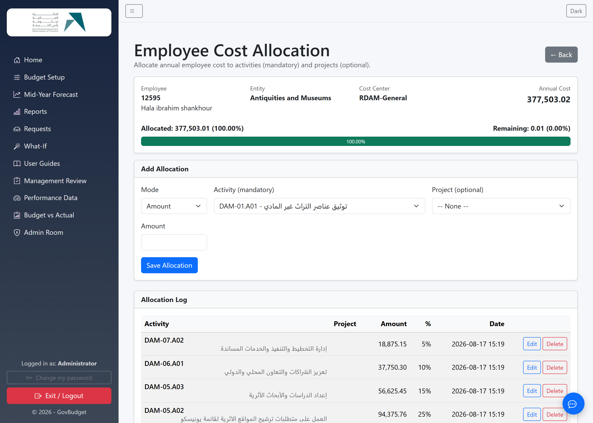
التقديم يخص فئة واحدة، لسنة وجهة ومركز تكلفة محدّدين، ويمرّ عبر تسلسل ثابت من الحالات.
| الحالة | المعنى | قابلة للتعديل؟ |
|---|---|---|
| مسودة (Draft) | عمل جارٍ، والبنود قيد الإدخال. | نعم |
| مُقدَّمة (Submitted) | قدّمها مُعِدّ الموازنة للاعتماد، بانتظار مراجعة الجهة. | لا |
| معتمدة من الجهة (EntityApproved) | اعتُمدت على مستوى الجهة، وجاهزة للإرسال إلى الدائرة المركزية. | لا |
| مرسلة للمركزية (SentToCentral) | لدى دائرة المالية المركزية للمراجعة النهائية. | لا |
| معتمدة نهائياً (SysApproved) | اعتُمدت نهائياً، وهي الموازنة المستقرة. | لا |
| مُعادة (Returned) | أُعيدت للتعديل، وتُنشأ إلى جانبها مسودة جديدة قابلة للتحرير. | لا — لكن المسودة التالية لها قابلة |
يحتفظ كل مسار تقديم بنسخ مرقّمة. وعند الإعادة أو فتح القفل، لا يُعيد النظام فتح النسخة المقفلة، بل يُنشئ مسودة جديدة برقم النسخة التالي، ويُبقي النسخة السابقة كما هي بحالة مُعادة.
وهذا مهم لسببين: يمكنك دائماً معرفة ما قُدِّم في كل مرحلة ومقارنة النسخ لإظهار ما تغيّر بالضبط؛ ولا يمكن تعديل موازنة معتمدة لاحقاً دون أثر.
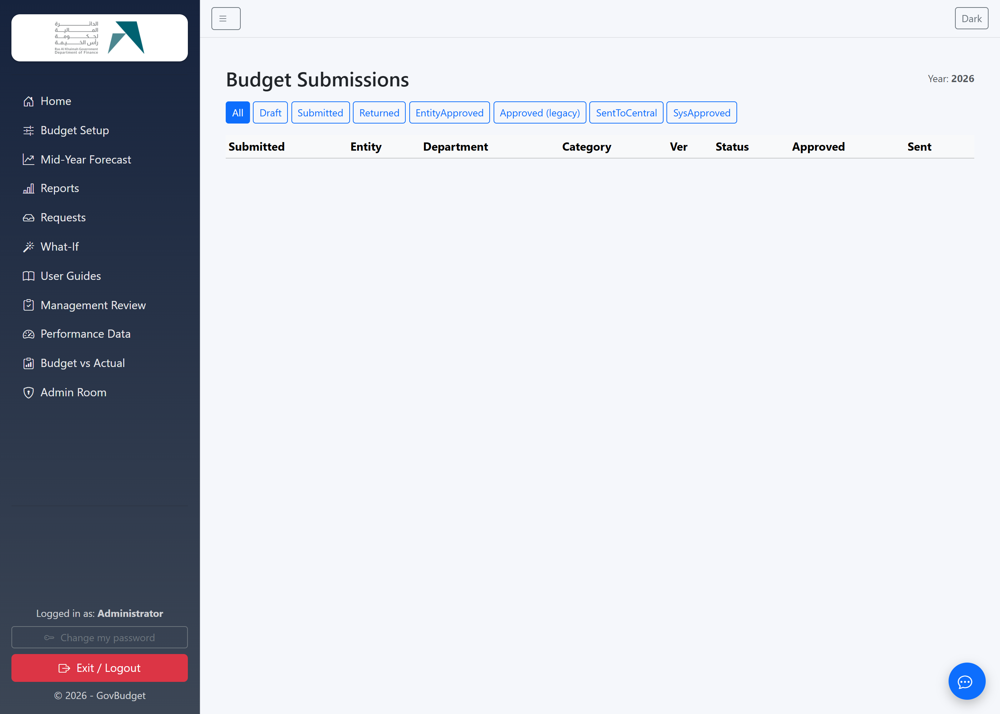
في منتصف السنة تسجّل الجهات ما أُنفق فعلياً خلال الأشهر الستة الأولى وتقديرها للنصف الثاني. وتلتقط شاشة تقديرات منتصف السنة الأمرين على الهيكل نفسه من الحسابات والأنشطة، بما يجعل المقارنة متجانسة.
وتغذّي النتيجة تقارير الفروقات: موازنة نصف السنة، والفعلي لنصف السنة، والفرق بينهما، إلى جانب التوقع المُحدَّث للسنة كاملة.
الاستيراد: مسؤول عام مسؤول جهة · التقارير: جميع الأدوار
يُستورد المصروف الفعلي بدل إدخاله يدوياً، عبر مسارين:
| المصدر | المستوى | أهميته |
|---|---|---|
| الفعلي المحاسبي (GL/MM) | الحساب والفترة | المصروفات العامة كما رُحِّلت في النظام المالي. |
| الفعلي للموارد البشرية | الموظف والشهر | تكلفة الرواتب لكل موظف. ولأنها على مستوى الموظف يمكن ربطها بالأنشطة بنِسَب التوزيع نفسها المستخدمة في الموازنة، فتُنتج تكلفة فعلية حسب النشاط لا حسب الحساب فقط. |
ثم تقارن شاشة الموازنة مقابل الفعلي بين الاثنين على الهيكل نفسه. وإذا لم يطابق رمز موظف مستورد أي موظف مُدرج في الموازنة، يُحتسب المبلغ ضمن إجمالي الموارد البشرية لكن لا يمكن ربطه بنشاط، ويُبلغ الاستيراد عن عدد هذه الصفوف.
SYSADMIN مسؤول عام فقط
هذه هي الخطوة التي تحوّل التكلفة المباشرة إلى تكلفة إجمالية. تأخذ تكلفة برامج المساندة وتوزّعها على أنشطة التكليف التي تساندها، باستخدام محرّك توزيع مثل عدد الموظفين.
لا تُعدَّل موازنتك الأصلية إطلاقاً. تُكتب نتائج التوزيع في جداول خاصة بها، وتبقى بنود الموازنة وتوزيعات الموارد البشرية كما أُدخلت تماماً — ويظل الأساس المباشر يعرض ما رصدته فعلاً.
كل حركة صافيها صفر. تُضاف الحركة إلى النشاط المستهدف (موزّع إليه) وتُخصم من البرنامج المصدر (موزّع منه) بالمبلغ نفسه، فتبقى التكلفة الإجمالية للجهة دون تغيير. التكلفة تنتقل ولا تُستحدث ولا تُفقد.
وعمليات التوزيع مُرقّمة بنسخ؛ فاعتماد عملية جديدة يُلغي سابقتها مع الاحتفاظ بها. وتستخدم التقارير على الأساس الإجمالي أحدث عملية معتمدة، وإن لم توجد عادت إلى الأساس المباشر.
تُعبّر تكلفة الساعة عن التكلفة السنوية للموظف على هيئة تكلفة ساعة عمل واحدة، وتُستخدم في احتساب تكلفة الخدمات والمخرجات — مثل التكلفة الحقيقية لعملية تفتيش أو إصدار تصريح عند تسعير وقت الموظفين الذي تستهلكه.
الإجازات السنوية والعطل الرسمية مدفوعة الأجر، وتكلفتها مضمَّنة أصلاً في التكلفة السنوية للموظف. وهذا يترك خياراً في المقسوم عليه، والخيار مهم:
| المعدّل | يُقسَم على | يُستخدم لـ |
|---|---|---|
| المعدّل المعياري معدّل التكلفة |
الساعات الإنتاجية — الساعات التعاقدية ناقص العطل الرسمية والإجازات السنوية المدفوعة | احتساب تكلفة الخدمات والمخرجات والمؤشرات. وهو المعدّل المعتمد. |
| المعدّل الاسمي | الساعات التعاقدية — السنة المدفوعة كاملة | للمقارنة والاسترشاد فقط. |
المعدّل المعياري أعلى، وهذا هو المقصود. فالقسمة على الساعات التعاقدية توزّع الراتب على ساعات تشمل غياباً مدفوعاً، وعندها لا يستردّ ضرب ساعات النشاط في المعدّل سوى جزء من الراتب، وتتحوّل الإجازات المدفوعة إلى تكلفة تخصّ الأنشطة لكنها لا تظهر في أي موضع. أما القسمة على الساعات الإنتاجية فتستوعب الإجازات المدفوعة داخل المعدّل، فيعود حاصل ضرب الساعات في المعدّل مطابقاً للتكلفة السنوية الكاملة. ويُعرض المعدّلان جنباً إلى جنب ليكون الأسلوب ظاهراً لا مخفياً داخل معادلة.
SYSADMIN مسؤول عام مسؤول جهة (جهته فقط)
تُشتق الساعات من تقويم عمل يُدار من غرفة المسؤول ← تقاويم العمل، وهو قائمة قصيرة من القيم:
| الإعداد | المعنى |
|---|---|
| ساعات اليوم / أيام الأسبوع / أسابيع السنة | النمط التعاقدي. وحاصل ضربها يعطي إجمالي الساعات المدفوعة. |
| العطل الرسمية (أيام) | أيام مدفوعة غير مشمولة بالعمل. |
| الإجازة السنوية (أيام) | رصيد الإجازة السنوية المستحق. |
| غياب مدفوع آخر (أيام) | أيام مرضية أو تدريبية مدفوعة إن كنت تتابعها، وإلا اتركها صفراً. |
| نسبة الاستغلال % | اتركها 100. فتخفيضها يُخلّ بمطابقة الإجمالي مع كامل تكلفة الرواتب. |
ويُستخدم تقويم واحد موسوم بـجميع الجهات كتقويم افتراضي، ولا تحتاج الجهة إلى تقويم خاص إلا إذا اختلف نمط عملها فعلياً. وتعرض الشاشة عدد الموظفين الذين يعتمد عليهم كل تقويم، فترى أثر أي تعديل قبل إجرائه.
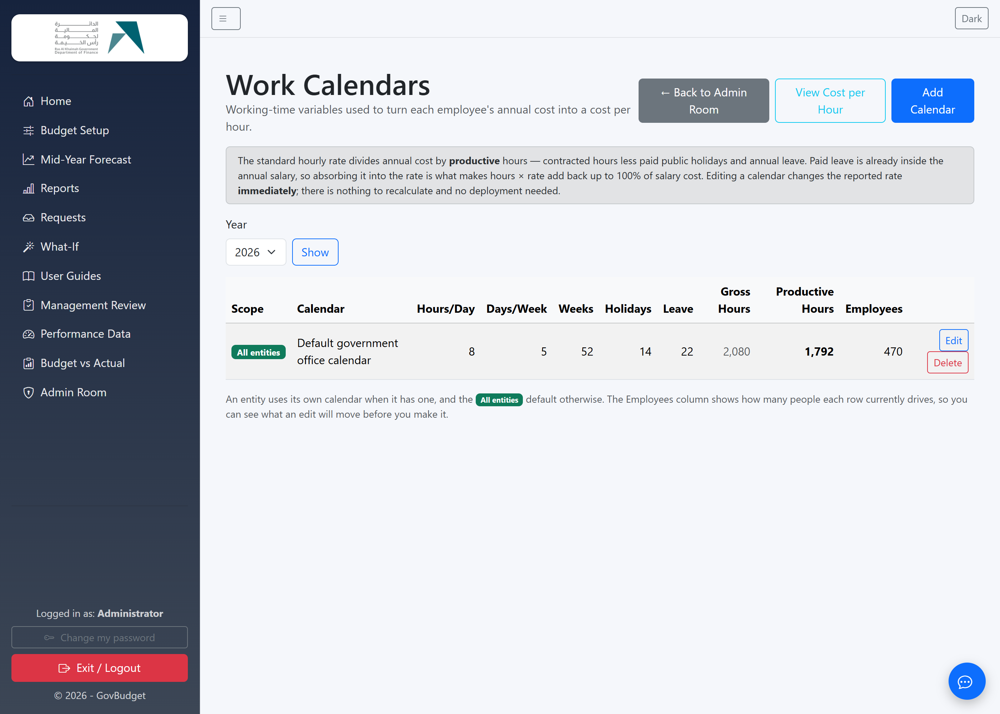
يعرض التقارير ← تكلفة ساعة الموظف كل موظف مع التفصيل الكامل للساعات — الساعات المدفوعة الإجمالية، والعطل، والإجازات، والساعات الإنتاجية — والمعدّلين معاً، بحيث يمكن تتبّع أي رقم.
ويعرض الملخّص معدّلاً مرجّحاً: إجمالي التكلفة مقسوماً على إجمالي الساعات الإنتاجية. وهو عمداً ليس متوسط المعدّلات الفردية، إذ إن ذلك يمنح عامل النظافة الوزن نفسه الذي يناله المدير ويقلّل من قيمة تكلفة ساعة العمل على مستوى المؤسسة.
ويُستثنى نوعان من الصفوف من المعدّل المرجّح مع تمييزهما:
وحين لا يتبع موظف بعينه تقويم الجهة فعلياً — دوام جزئي، أو نظام ورديات، أو التحاق في منتصف السنة — يمكن تعديل ساعاته بشكل فردي دون التأثير على غيره.
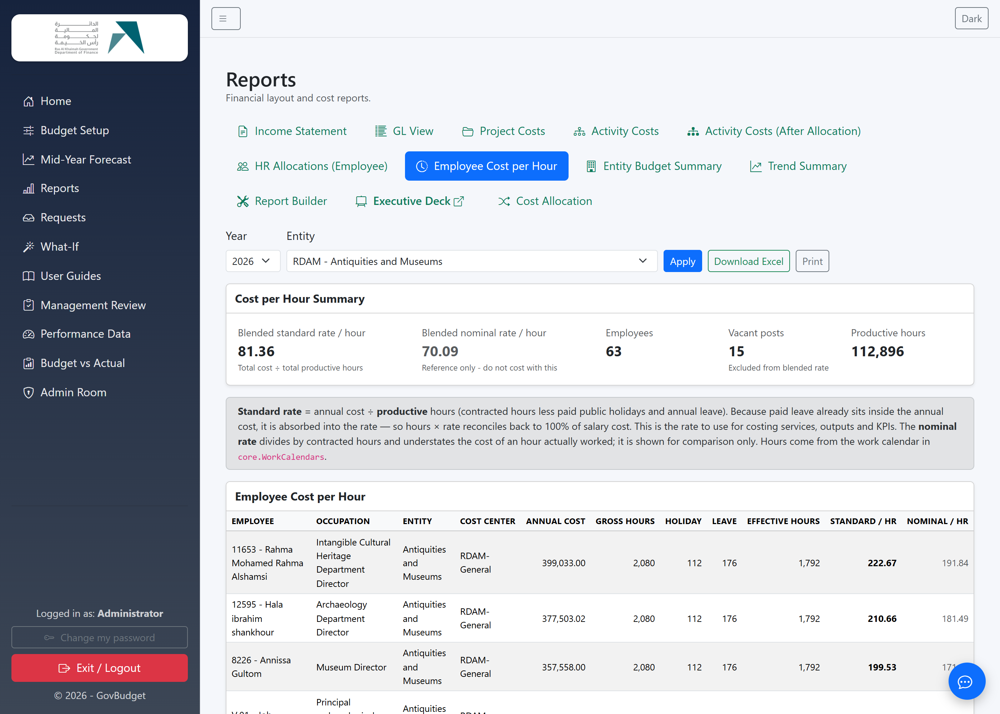
| التقرير | ما يعرضه |
|---|---|
| قائمة الدخل | الإيرادات والمصروفات حسب البرنامج والنشاط والحساب المحاسبي. |
| عرض الحسابات | الأرقام نفسها مرتّبة حسب الحساب المحاسبي. |
| تكاليف المشاريع | التكلفة حسب المشروع، موزّعة على الإيرادات والموارد البشرية والرأسمالي والتشغيلي. |
| تكاليف الأنشطة | التكلفة حسب النشاط مجمّعة تحت برنامجها — على الأساس المباشر. |
| تكاليف الأنشطة بعد التوزيع | العرض نفسه على الأساس الإجمالي، بعد توزيع تكاليف المساندة على أنشطة التكليف. |
| توزيعات الموارد البشرية | الموظف ← البرنامج ← النشاط ← الحساب، مع إجماليات المستورد والموزَّع وغير الموزَّع. |
| تكلفة ساعة الموظف | المعدّل المعياري والاسمي لكل موظف — انظر القسم 10. |
| ملخص موازنة الجهات | الإجماليات حسب الجهة للمقارنة بين المؤسسات. |
| ملخص الاتجاه | التغيّر عبر السنوات. |
وفي تقارير التكلفة، يفتح النقر على أي رقم الحركات التفصيلية داخل الصفحة، فتنتقل من الإجمالي إلى البنود التي كوّنته دون مغادرة الشاشة.
منشئ التقارير مخصّص للأسئلة التي لا تجيب عنها التقارير القياسية. تختار بماذا تُجمّع، وماذا تقيس، وكيف تعرض.
| الخيار | وظيفته |
|---|---|
| تجميع الصفوف حسب | بُعد الصفوف — الجهة، الفئة، نوع الحساب، الحساب، البرنامج، نوع البرنامج، النشاط، المشروع أو البند. |
| تقسيم الأعمدة حسب | بُعد ثانٍ اختياري عبر الأعمدة يُنتج جدولاً متقاطعاً. اختر الشهر لتوزيع يناير–ديسمبر، أو (بدون) لقائمة بسيطة. |
| المقياس | مبلغ الموازنة، التقدير الأول أو الثاني، الكمية، موازنة نصف السنة، الفعلي لنصف السنة، أو الفرق. |
| أساس التكلفة | مباشر أو إجمالي — انظر القسم 2. |
| تصفية الفئات | تضمين أو استبعاد فئات محدّدة. |
| تضمين الموارد البشرية | ما إذا كانت تكلفة الموارد البشرية الموزَّعة تدخل في الأرقام. |
| طريقة العرض | جدول، أعمدة، أعمدة أفقية، مخطط تدرّجي (Waterfall)، دائري، أو خطي. |
ويمكن حفظ أي إعداد تتوقع تكراره باسم معيّن وفتحه لاحقاً. وتحتفظ التقارير المحفوظة بأساس التكلفة أيضاً — وهو أمر جدير بالملاحظة إذا وجدت تقريراً محفوظاً يعود دائماً على الأساس الإجمالي بينما تتوقع المباشر.
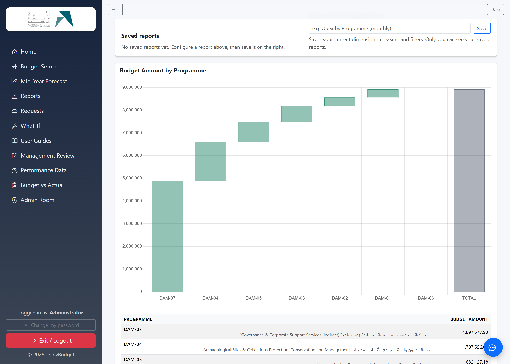
العرض التنفيذي شرائح مُعبّأة بأرقام حقيقية للسنة والجهة المختارتين، تقارن الموازنة التقليدية القائمة على المدخلات بالمنظور المبني على الأداء. ويُفتح في تبويب جديد، والغرض منه إحاطة الإدارة العليا لا التحليل اليومي.
التكلفة نصف الموازنة المبنية على الأداء فقط؛ والنصف الآخر هو ما أنتجه المال.
وتُدخِل الجهة بيانات المخرجات والمؤشرات، وتعتمد جودة تقارير تكلفة الوحدة عليها مباشرةً، لذا يُستحسن إبقاؤها محدّثة.
SYSADMIN مسؤول عام فقط
في المراجعة الإدارية تُعتمد التقديمات أو تُعاد، وتضم أيضاً حزمة التقارير الإدارية:
وتُصدَّر الحزمة كاملةً إلى ملف Excel متعدّد الأوراق.
تجيب هذه الشاشة عن أسئلة مثل: ماذا لو خُفِّضت الموازنة بنسبة 10%؟ دون المساس بالموازنة الفعلية. تُنشئ سيناريو باسم معيّن، وتطبّق التعديلات، ثم تستعرض التقارير من خلاله.
وعند تفعيل سيناريو تظهر علامة سيناريو مُفعَّل واضحة على التقارير حتى لا يخلط أحد بين الأرقام المُنمذجة والموازنة الحقيقية. وبإلغاء التفعيل تعود التقارير إلى وضعها الطبيعي. والسيناريوهات لا تعدّل بنود الموازنة إطلاقاً.
الطلبات قناة مراسلة بسيطة داخل النظام. يستطيع مُعِدّ الموازنة طرح استفسار أو طلب فتح قفل، ويردّ المسؤول، دون انتقال النقاش إلى البريد الإلكتروني حيث ينفصل عن الموازنة التي يخصّها.
المساعد لوحة محادثة تجيب عن أسئلة تتعلق ببيانات موازنتك وأدائك، وبممارسات منظمة التعاون الاقتصادي والتنمية (OECD) في الموازنة المبنية على الأداء. وهو للقراءة فقط — يشرح الأرقام ويلخّصها ولا يستطيع تغيير أي شيء — ويجيب فقط ضمن البيانات المسموح لحسابك بالاطّلاع عليها.
SYSADMIN مسؤول عام مسؤول جهة (جهته فقط)
تتركّز جميع الأعمال الإدارية في غرفة المسؤول.
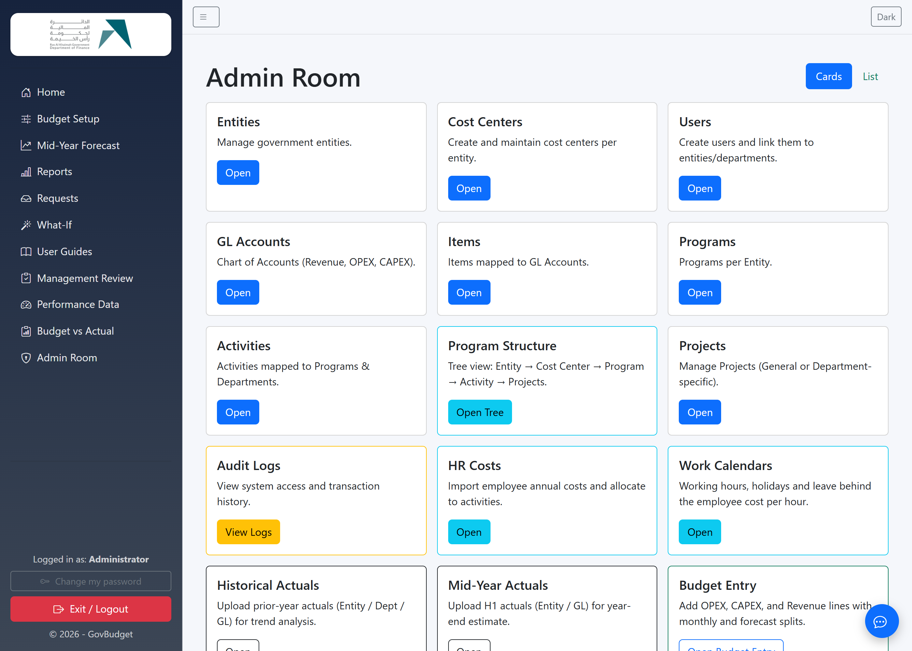
ترتبط البيانات المرجعية ببعضها، وإعدادها بهذا الترتيب يجنّبك إعادة العمل:
أنشئ الحساب ثم حدّد الدور والجهة ومركز التكلفة. وتذكّر أن المسؤول غير المرتبط بجهة يكون مسؤولاً عاماً، وربطه بجهة يحصره فيها.
ويستطيع المسؤولون إعادة تعيين كلمة المرور بإصدار رابط، وفتح الحساب الموقوف بسبب محاولات دخول خاطئة.
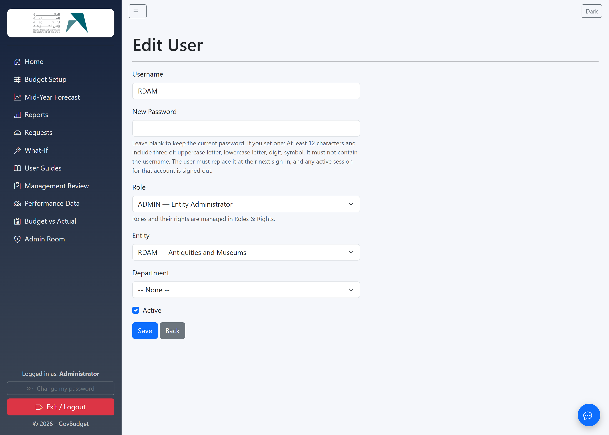
SYSADMIN فقط
تُدرَج هنا كل شاشة في النظام، ويمكن منح كل دور صلاحيات العرض والإضافة والتعديل والحذف عليها. أما الشاشات المخصّصة للاطّلاع كالتقارير فلا تتيح سوى العرض.
وتسري التعديلات على المستخدمين عند تحديث الصفحة التالي. ويحتفظ دور SYSADMIN بصلاحية كاملة مهما كانت الإعدادات، وهو الضمان الذي يمنع أن يؤدي حفظ خاطئ إلى إغلاق النظام أمام الجميع.
تُستورد التكاليف السنوية للموظفين من ملف Excel. نزّل القالب، واملأه، ثم استورده. ويتحقّق المستورِد من الجهة ومركز التكلفة والحساب المحاسبي، ويُبلغ عن أي صف تعذّر قبوله، ويحمّل بقية الملف. أما الموظفون الموجودون للسنة نفسها فتُحدَّث بياناتهم بدلاً من تكرارها.
يُستورد الفعلي المحاسبي وفعلي الموارد البشرية من هنا — انظر القسم 8.
تُسجَّل الإجراءات الرئيسية مع المستخدم والوقت والتفاصيل: إدارة المستخدمين، وعمليات التوزيع، والاستيراد، والاعتمادات، وتعديلات التقاويم. ويرى مسؤول الجهة سجلات جهته.
| المصطلح | المعنى |
|---|---|
| النشاط | عمل محدّد داخل برنامج، وفيه تُدخَل التكاليف. |
| موزّع إليه / موزّع منه | الإضافة إلى النشاط المستفيد والخصم المقابل من البرنامج المصدر في عملية التوزيع. |
| تسلسل التوزيع | ترتيب توزيع برامج المساندة تنازلياً. |
| المعدّل المرجّح | إجمالي التكلفة مقسوماً على إجمالي الساعات — وليس متوسط المعدّلات الفردية. |
| مركز التكلفة | وحدة داخل الجهة، ويسمى أيضاً الإدارة. |
| الأساس المباشر | بقاء التكاليف حيث أُدخلت، وهو الافتراضي. |
| محرّك التوزيع | الأساس المستخدم لتوزيع تكلفة المساندة، مثل عدد الموظفين. |
| الجهة | مؤسسة أو هيئة حكومية. |
| الساعات المدفوعة الإجمالية | الساعات التعاقدية في السنة قبل خصم الغياب المدفوع. |
| برنامج التكليف | أعمال المهمة الأساسية، ويستقبل التكاليف الموزّعة. |
| المعدّل الاسمي | التكلفة السنوية مقسومة على الساعات التعاقدية، للاسترشاد فقط. |
| الساعات الإنتاجية | الساعات التعاقدية ناقص العطل والإجازات المدفوعة — الساعات المتاحة للعمل على الأنشطة. |
| البرنامج | كتلة عمل مصنّفة تكليفاً أو مساندة. |
| المعدّل المعياري | التكلفة السنوية مقسومة على الساعات الإنتاجية، وهو معدّل التكلفة المعتمد. |
| برنامج المساندة | عمل مساند يمكن توزيع تكلفته على أنشطة التكليف. |
| الأساس الإجمالي | التكاليف شاملةً أحدث توزيع معتمد (التكلفة المحمّلة بالكامل). |
| النسخة | جيل مرقّم من التقديم. الإعادة تُنشئ نسخاً جديدة ولا يُستبدل شيء. |
هذا هو الترتيب الافتراضي. والصلاحيات قابلة للضبط لكل دور من شاشة الأدوار والصلاحيات، لذا قد يختلف التطبيق لديك.
| المجال | SYSADMIN | مسؤول عام | مسؤول جهة | USER |
|---|---|---|---|---|
| البيانات المرجعية (الجهات، مراكز التكلفة، الحسابات، البنود) | كامل | كامل | جهته | لا |
| البرامج وتصنيفها | كامل | كامل | جهته | لا |
| الأنشطة والمشاريع | كامل | كامل | جهته | لا |
| المستخدمون | الكل بما فيهم SYSADMIN | الكل عدا SYSADMIN | جهته | لا |
| الأدوار والصلاحيات | نعم | لا | لا | لا |
| إدخال الموازنة | نعم | نعم | جهته | نطاقه |
| استيراد تكاليف الموارد البشرية | نعم | نعم | جهته | لا |
| توزيع الموارد البشرية على الأنشطة | نعم | نعم | جهته | نطاقه |
| تقاويم العمل | نعم | نعم | جهته | لا |
| تقديم الموازنة | نعم | نعم | نعم | نعم |
| اعتماد/إعادة التقديمات | نعم | نعم | جهته | لا |
| محرك توزيع التكاليف | نعم | نعم | لا | لا |
| حزمة المراجعة الإدارية | نعم | نعم | لا | لا |
| التقارير | الكل | الكل | جهته | نطاقه |
| استيراد الفعلي | نعم | نعم | جهته | لا |
| سجل التدقيق | الكل | الكل | جهته | لا |
تُصفَّى البرامج حسب جهتك ويجب أن تكون نشطة. تأكّد أن سياقك على الجهة والسنة الصحيحتين، واسأل المسؤول عمّا إذا كان البرنامج موجوداً ونشطاً.
الفئة ليست في حالة مسودة؛ فبعد التقديم تُقفل. اطلب من المسؤول إعادتها أو فتح قفلها — وستحصل على مسودة جديدة للتعديل، مع الاحتفاظ بتقديمك السابق كسجل.
هي مقصورة على أدوار المسؤولين. إن كان يُفترض أن لديك صلاحية، اطلب من مسؤول النظام مراجعة دورك وارتباطك بالجهة.
إن كان برنامج مساندة والتقرير على الأساس الإجمالي، فالصفر صحيح — إذ وُزِّعت تكلفته على برامج التكليف. بدّل إلى الأساس المباشر لرؤية تكلفته الخاصة. وانتبه إلى أن التقارير المحفوظة تحتفظ بأساس التكلفة الخاص بها.
إمّا أنه لا يوجد تقويم عمل لتلك السنة — أضفه من غرفة المسؤول ← تقاويم العمل — أو أن الصف وظيفة شاغرة، وهي مستثناة عمداً.
راجع شاشة فروقات التوزيع. فالراتب غير الموزَّع على أي نشاط يُحتسب ضمن إجمالي الموارد البشرية لكنه لا يظهر أمام أي نشاط أو برنامج.
حدّث الصفحة بالضغط على Ctrl+F5. وإن بقيت الأرقام قديمة، تأكّد من السنة والجهة وأساس التكلفة في أعلى التقرير.
GovBudget — الدليل الشامل، الإصدار 2.0. لإنتاج ملف PDF افتح هذه الصفحة واختر طباعة ثم حفظ بصيغة PDF. حكومة رأس الخيمة، دائرة المالية.